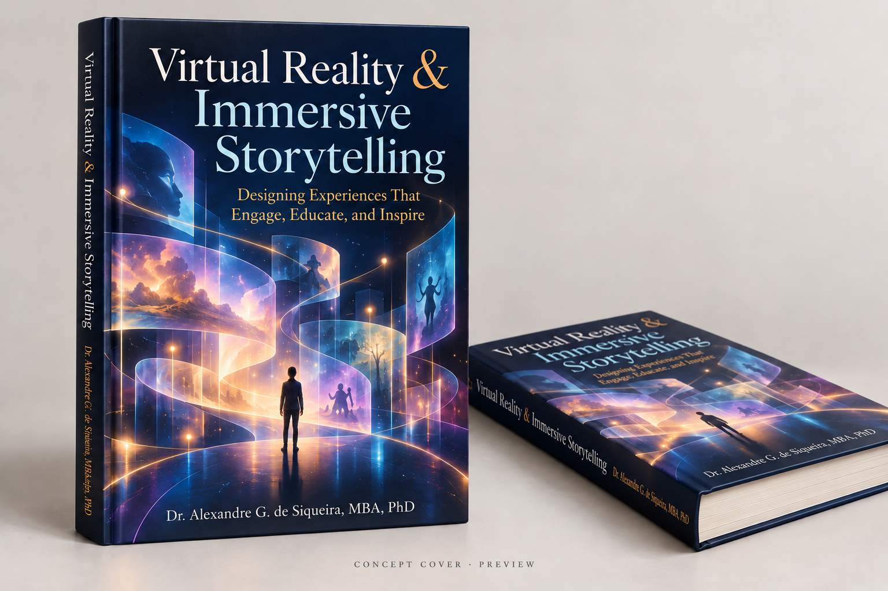
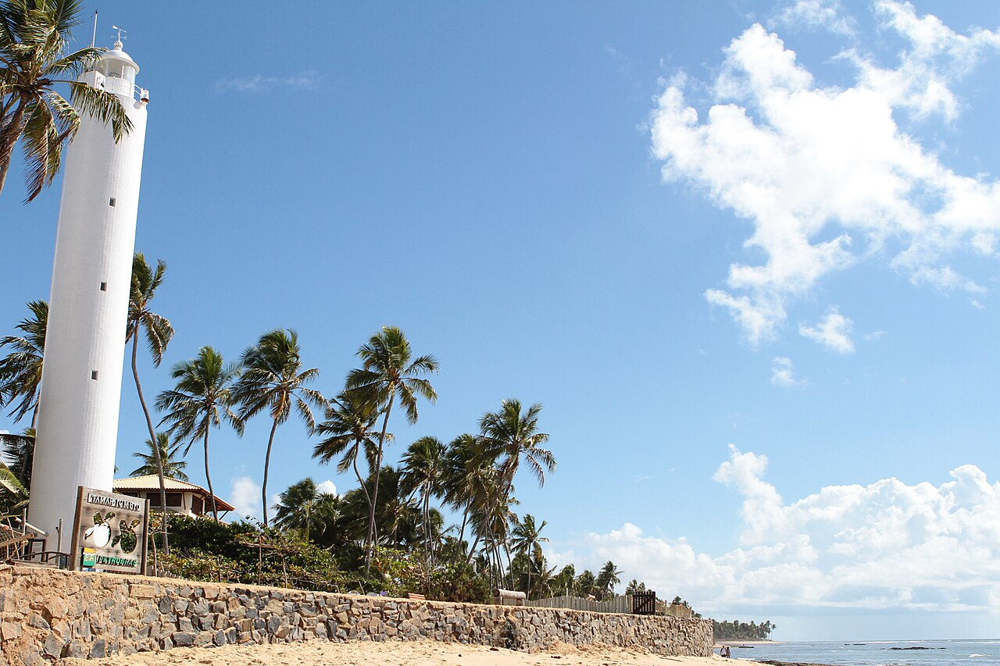
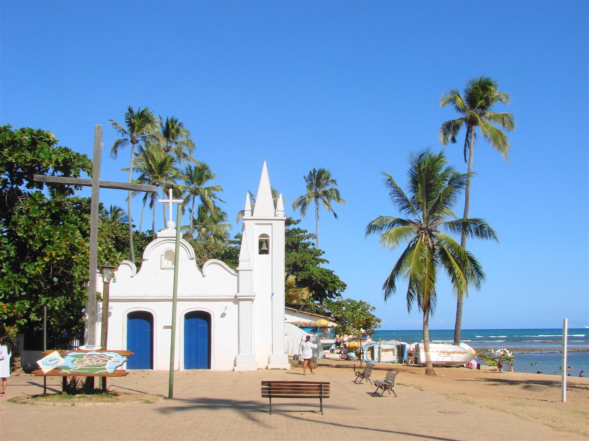

Your personal portfolio
A guided personal portfolio page at uf-brazil.mixed.group, tailored to your field and career goals.
UNIVERSITY OF FLORIDA / BRAZIL / SUMMER 2027
All majors welcome. No VR experience required.

Leave your mark.
Bring home more than memories.
Help bring new life to Salvador's historic downtown through immersive exhibits that remain after you return home.
WHAT YOU TAKE HOME
A guided personal portfolio page at uf-brazil.mixed.group, tailored to your field and career goals.
Connect with SENAI CIMATEC researchers and industry professionals in Brazil.
Help shape a new book through your images, insights, and creative work.
THE PROJECT & YOUR ROLE
Bring Salvador's history into the present through immersive experiences and exhibits. Work with Brazilian collaborators at SENAI CIMATEC Digital e Criativo in Pelourinho, contributing to the revitalization of historic downtown. Your exhibits will remain at SENAI locations after you return home.
Past, present, future: explore Afro-Brazilian heritage, living cultural traditions, and new possibilities for the historic downtown. Pelourinho is part of Salvador's UNESCO-listed Historic Centre.
Research a story, shape a space, create images, design an interaction, or build a prototype. Artists, architects, designers, engineers, programmers, historians, and storytellers all have a place.
BECOME PART OF ITS CREATION
Learn from the pre-release edition of Virtual Reality & Immersive Storytelling: Designing Experiences That Engage, Educate, and Inspire. Apply its ideas and help shape its development through your images, insights, and creative work.
Your ideas. Your creative work. Your contribution to a new book.

RESEARCH & INDUSTRY
Interact with SENAI CIMATEC researchers, explore labs, and connect with industry professionals. Bring questions from your field into an environment where creative and technical disciplines meet.
An international learning environment, with English-taught classes and experience bringing UF and Brazilian students together.
Dr. Alexandre Siqueira's Summer 2026 course brought UF and Brazilian students together. Program support includes bilingual coordination.

SENAI CIMATEC hosted SVR 2025, the Brazilian Symposium on Virtual and Augmented Reality, connecting researchers in immersive technology.
CIMATEC Park is home to Ford's Development and Technology Center - part of the industry-connected environment you'll explore.
Digital e Criativo is in Salvador's historic downtown. CIMATEC Park is in Camaçari.
Ford's connection to CIMATEC Park ↗COASTAL LIFE & VALUE
Make Praia do Forte, a Brazilian coastal village, your home. Discover beaches, Bahian food, music, and culture, with Projeto TAMAR's sea turtle conservation nearby.


Shared double rooms with private bathrooms. Your full eight-week hostel stay is included in the program fee.

Explore Afro-Brazilian cultural life, food, music, and living traditions. Possible activities include Balé Folclórico da Bahia, capoeira and drumming workshops, and Ilha dos Frades, depending on the official schedule.
Independent videos show personal perspectives, not confirmed UF activities.
Start in Gainesville: SAMBA Brazilian Kitchen and Bloco GNV.
PRACTICAL DETAILS
UF in Brazil - Cross-Cultural Engineering and Immersive Technologies for Industry 5.0
$395 nonrefundable deposit, applied toward the total fee, due when applying. Remaining fees are due no later than 45 days before departure; financial aid deferment depends on eligible aid.
Eight weeks at Praia do Forte Hostel in shared double rooms with private bathrooms; tuition for six credits; all breakfasts; welcome and farewell dinners; program-related transportation; international health insurance and emergency medical assistance. Accommodation on scheduled program excursions is also included.
Round-trip airfare, meals beyond the included breakfasts and welcome/farewell dinners, applicable visa documents, personal travel and expenses, and optional trip cancellation or interruption insurance.
Eligible financial aid may apply. Check your individual eligibility with UF Student Financial Aid and Scholarships and explore UF International Center scholarships.
Contact program director Alexandre Gomes de Siqueira or study abroad advisor Heather Harris. Specific research and industry visit arrangements will be shared when confirmed.
The UF Abroad brochure maintains current application requirements and program terms.